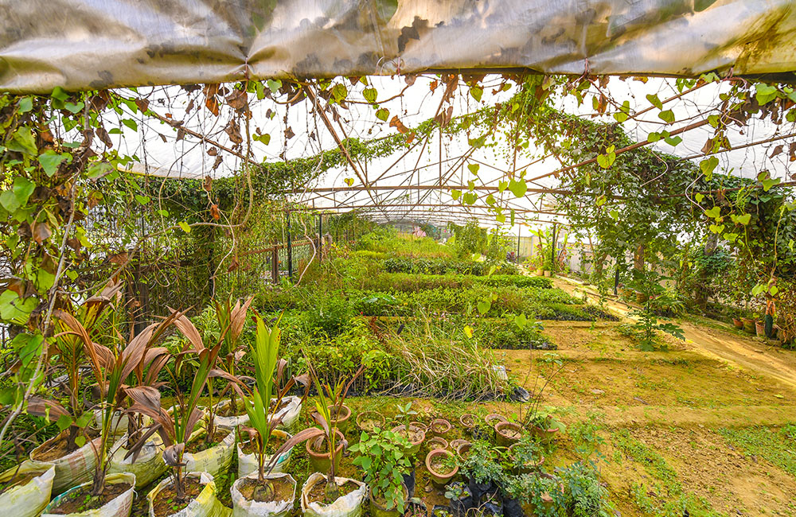

About the Virtual Herbal Garden
Promoting the Healing Power of Medicinal Plants through AYUSH


Promoting the Healing Power of Medicinal Plants through AYUSH
At the Virtual Herbal Garden, we believe that nature holds the key to holistic wellness. Our platform celebrates the rich heritage of medicinal plants, guided by the principles of AYUSH. Explore the knowledge passed down through generations, now accessible in a modern, virtual format.
Our mission is to bridge the gap between traditional herbal knowledge and modern accessibility. We aim to preserve the rich biodiversity of medicinal plants and promote the wellness practices of AYUSH for all.
A virtual garden allows us to bring the wonders of medicinal plants to your fingertips. It offers an immersive experience, where you can explore, learn, and discover the healing properties of nature in a way that's convenient and accessible to everyone.
Promoting the wisdom of AYUSH and medicinal plants.
Bringing traditional knowledge to modern, global audiences.
Encouraging the preservation and protection of plant biodiversity.
Combining traditional knowledge with cutting-edge virtual technology.